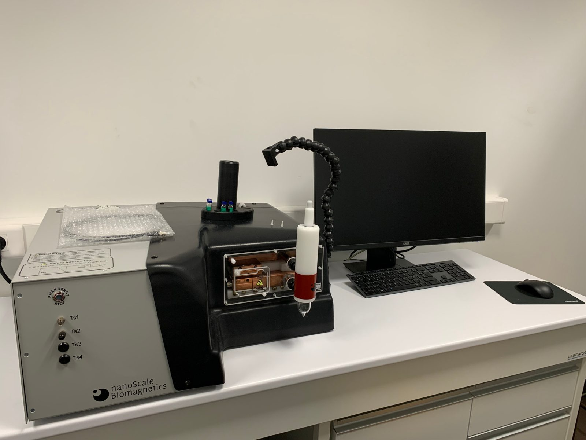
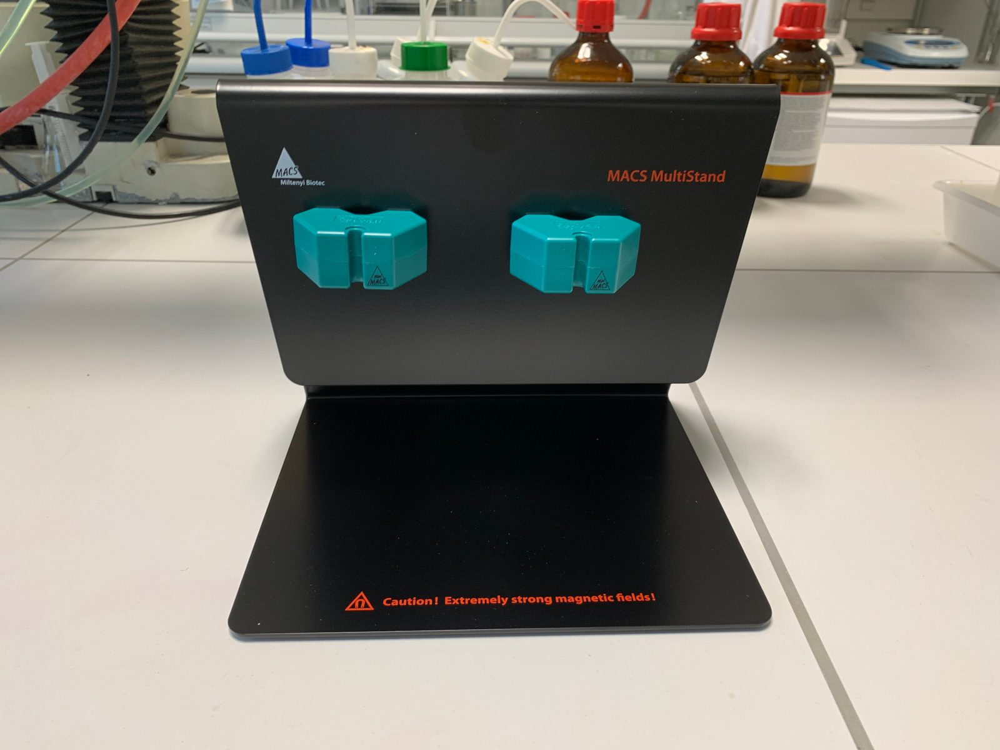
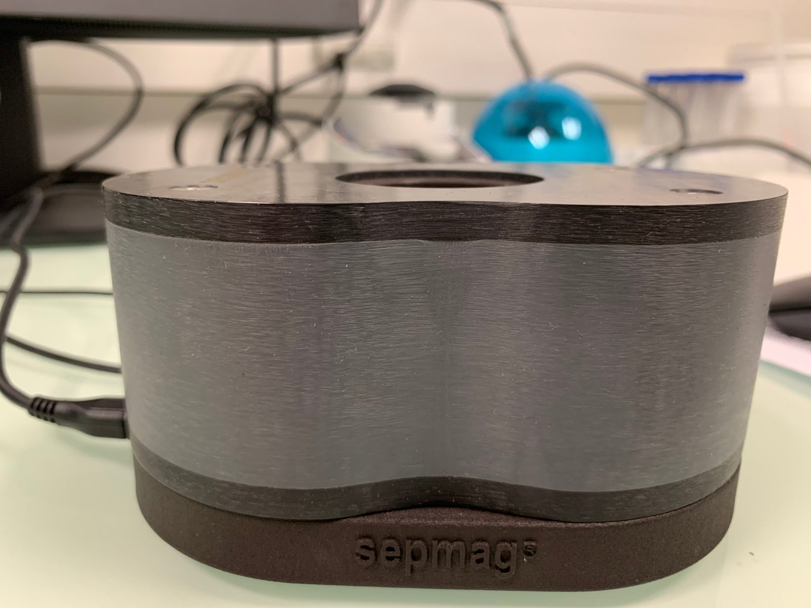
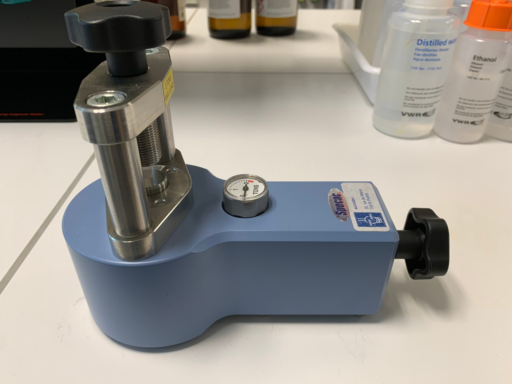

NanoBioMat / Équipements
Techniques et savoir-faire
Synthèse, formulation et caractérisation, avec l’appui de plateformes locales et de partenaires.
Les techniques sont mises en œuvre grâce aux équipements locaux et aux plateformes partenaires. Contactez-nous pour discuter de leur accès et de leur adéquation à une étude donnée.
Au laboratoire
Quelques équipements

nanoScale Biomagnetics
Hyperthermie magnétique
Étude de l’échauffement d’échantillons de nanoparticules magnétiques soumis à un champ magnétique alternatif.
Informations sur l’équipement↗
Miltenyi Biotec · MidiMACS
Séparation magnétique sur colonne
Séparateurs à aimants permanents montés sur un MACS MultiStand, pour la séparation sur colonnes magnétiques compatibles.
Informations sur l’équipement↗
Sepmag
Décantation magnétique
Séparation magnétique de particules en suspension permettant de recueillir la fraction magnétique.
Informations sur l’équipement↗
Specac
Préparation de pastilles
Presse manuelle permettant de préparer des pastilles de poudre pour les mesures magnétiques par magnétométrie.
Informations sur l’équipement↗
Synthèse et formulation de nanoparticules
Synthèse de nanoparticules magnétiques
- Synthèse de nanoparticules d’oxyde de fer
- Contrôle de la taille, de la morphologie et de la chimie de surface
- Préparation de nanoparticules hydrophobes et dispersables dans l’eau
Formulation de nanoassemblages
- Nanoprécipitation flash
- Mélange par jets impactants confinés
- Revêtement polymère et stabilisation colloïdale
- Nanoassemblages magnétiques hybrides incorporant des molécules actives hydrophobes
Caractérisation physicochimique
- Diffusion dynamique de la lumière et études de stabilité colloïdale
- Mesures de potentiel zêta
- Spectroscopies UV-visible et de fluorescence
- Spectroscopie infrarouge à transformée de Fourier
- Dosage du fer par spectroscopie d’absorption atomique
- Analyse thermogravimétrique
- Diffraction des rayons X sur poudre
Caractérisation magnétique et magnétothermique
- Mesures d’hyperthermie magnétique
- Exposition à un champ magnétique alternatif
- Détermination du SAR et de l’ILP
- Évaluation de l’échauffement induit magnétiquement dans les suspensions colloïdales
Microscopie et évaluation biologique
- Microscopie électronique sur les plateformes locales et partenaires
- Morphologie des nanoparticules et imagerie des nanoassemblages
- Études d’internalisation cellulaire
- Évaluation biologique in vitro
- Études biologiques en collaboration